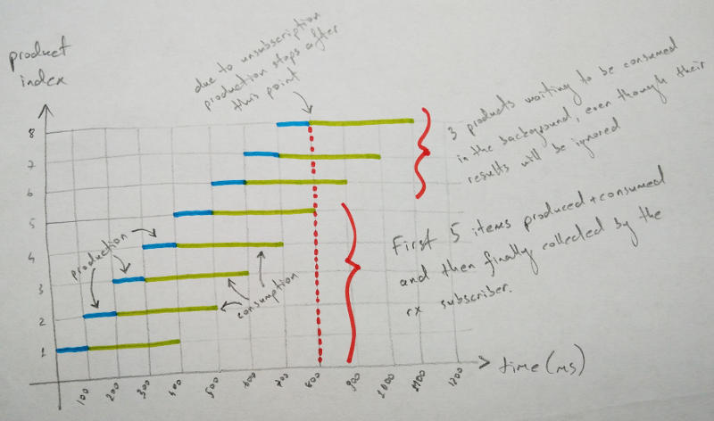

In a reactive application, you don’t necessarily have control over the production and/or consumption rate of certain streams. This speed mismatch can cause severe and hard to find bugs, which might be overlooked in development environments while bringing in the entire system down in production.
Consider the following example:
import com.google.common.base.Throwables;
import rx.Observable;
import java.util.concurrent.atomic.AtomicInteger;
public enum NoBackPressure {;
public static void main(String[] args) {
long producePeriod = 100;
long consumePeriod = 300;
AtomicInteger pendingTaskCount = new AtomicInteger();
// Create a fast producer emitting an infinite number of items.
createStream(producePeriod, true, pendingTaskCount::incrementAndGet)
.flatMap(ignored ->
// Create a slow consumer emitting just one item.
createStream(consumePeriod, false, pendingTaskCount::decrementAndGet))
.take(5)
.toBlocking()
.last();
System.out.format("pending task count: %d\n", pendingTaskCount.get());
}
private static <T> Observable<T> createStream(long pausePeriodMillis, boolean infinite, Supplier<T> body) {
return Observable.create(subscriber -> {
new Thread() {
@Override
public void run() {
do {
pause(pausePeriodMillis);
T next = body.get();
subscriber.onNext(next);
} while (infinite && !subscriber.isUnsubscribed());
}
}.start();
});
}
private static void pause(long millis) {
try { Thread.sleep(millis); }
catch (InterruptedException error) { Throwables.propagate(error); }
}
}What’s going on really here? The fast producer is an observable emitting an
item every 100ms and then incrementing the pendingTaskCount. Subsequently,
the emitted item is flatMaped into another consumer observable emitting an
item every 300ms and then decrementing the pendingTaskCount. That is, yet
another simple producer-consumer pipeline. Finally, we ask for the first 5
items emitted out of the pipeline. Can you guess the program output? Or let me
rephrase the question: Do you expect pendingTaskCount to be non-zero?
Unfortunately, yes. It is 3 in this case. Let’s shed some more light into it:

As my spectular drawing skills depict above, during the completion of the
final 5th item, the producer generates 3 other items which later on get
processed by the slow consumer. So you have 3 extra threads lingering in the
background hogging both memory and processing resources. (Why 3? Because
consumePeriod / producePeriod = 3.) While 3 seems like an innocent and hence
negligible magnitude, this speed unalignment can get a lot more worse once you
deploy the application to production. (Yes, it did in our case at work.) What
do I exactly mean by worse? If we would set consumePeriod to 10s, and
producePeriod to 10ms, then there will be 1000 threads running in the
background at any particular point in time!
In a nutshell, we need to come up with a way to regulate the production pace in line with the consumption. We can either do this by an on-demand producer (reactive pull) or blocking the producer itself (callstack blocking). (Both in its official wiki and Stack Overflow Documentation, RxJava has quite some juice on the subject.)
Three common methods provided out of the box by RxJava for dealing with
back-pressure are onBackpressureBuffer, onBackpressureDrop, and
onBackpressureLatest. While they definitely do the trick, rather than
regulating the production speed, they just discard emitted items by the
producer under certain back-pressure circumstances. (I am keeping experimental
RxJava >1.0 feature onBackpressureBlock out of this discussion due to its
ambiguous future and known track record of holding a potential to introduce
dead-locks.)
RxJava has one more bullet in the hand though: SyncOnSubscribe. This almost orphan, totally undocumented prodigy, provides the necessary harness to create stateful and on-demand producers:
SyncOnSubscribe<Integer, InputStream> binaryReader = SyncOnSubscribe.createStateful(
// Create the initial state. (Invoked per subscriber.)
() -> new FileInputStream("data.bin"),
// Upon request, emit a new item and return the new state.
(inputStream, output) -> {
try {
int byte = inputStream.read();
if (byte < 0) output.onCompleted()
else output.onNext(byte);
} catch (IOException ex) {
output.onError(ex);
}
return inputStream;
},
// Perform final clean-up using the state. (Invoked upon unsubscription.)
inputStream -> {
try { inputStream.close(); }
catch (IOException error) { RxJavaHooks.onError(error); }
}
);
Observable<Integer> observableBinaryReader = Observable.create(binaryReader);Awesome! We are done, right? Unfortunately not. In RxJava, unless you specify
otherwise, every consumer tries to pull Long.MAX_VALUE items from the
observable it is subscribed
to. You
can change this beaviour by overriding this value:
observableBinaryReader.subscribe(new Subscriber<Integer>() {
@Override
public void onStart() {
request(1); // Request 1 item on start up.
}
public void onNext(Integer v) {
compute(v);
request(1); // Request a new item after consuming one.
}
@Override
public void onError(Throwable error) {
error.printStackTrace();
}
@Override
public void onCompleted() {
System.out.println("Done!");
}
});In other words, the subscriber needs to be aware of the producer-consumer pace
mismatch and align them explicitly by limiting the number of requested items.
To the best of my knowledge, it is not possible to enforce the subscriber to
specify the number of requested items. You just need to hope that the next
programmer consuming your Observable<T> will be able to figure out the
back-pressure problem and override the request(Long.MAX_VALUE) behaviour.
(But you know that he won’t, right?)
As a matter of fact, reactive pull does not provide a solution for our over-productive observable example, which just blindly emits items by ignoring the consumer pace. We need a way to block the production according to the consumption rate. And Rx literature has already got a term for this approach: Callstack Blocking.
Shamelessly copying from the RxJava wiki:
Another way of handling an over-productive
Observableis to block the callstack (parking the thread that governs the over-productiveObservable). This has the disadvantage of going against the reactive and non-blocking model of Rx. However this can be a viable option if the problematicObservableis on a thread that can be blocked safely. Currently RxJava does not expose any operators to facilitate this.
But the good news is, you can implement this yourself. Let me walk-through you how to do it.
Let me introduce you to the poor man’s back-pressure queue.
public static void main(String[] args) {
long producePeriod = 100;
long consumePeriod = 300;
AtomicInteger pendingTaskCount = new AtomicInteger();
// The token queue for producer-consumer pipeline.
BlockingQueue<Integer> tokens = new ArrayBlockingQueue<>(
1, // Number of tokens allowed.
false, // fair? (preserve the FIFO order?)
Collections.singleton(1)); // Initial tokens.
createStream(producePeriod, true, () -> {
pendingTaskCount.incrementAndGet();
// Try to acquire a token from the queue.
try { return tokens.take(); }
catch (InterruptedException error) { throw Throwables.propagate(error); }
})
.flatMap(token ->
createStream(consumePeriod, false, () -> {
pendingTaskCount.decrementAndGet();
// Push the token back into the queue.
try { tokens.put(token); }
catch (InterruptedException error) { throw Throwables.propagate(error); }
return null;
}))
.take(5)
.toBlocking()
.last();
System.out.format("pending task count: %d\n", pendingTaskCount.get());
}Here we use a blocking queue to implement a token storage where producers
acquire from and consumers release to. This way we create a way to communicate
the back-pressure from consumers to the producer. Initially there is just a
single token. Producer acquires this token and emits an item. Note that the
upcoming producer call of the thread will block since there are no tokens left
in the queue. Next, consumer emits an item and releases the token back into
the queue. Now the blocked thread can proceed and emit a new item and so on.
By limiting the number of tokens initially available within the queue, we put
an upper limit on the number of concurrent consumptions. This version of our
producer-consumer pipeline reports that pendingTaskCount is 1, which is
independent of the producer/consumer speed mismatch.
Can we avoid having a global reference to the token storage and make it explicit in the return type of the observable signature? Consider the following two interfaces:
public interface BackPressuredFactory {
@Nonnull <T> BackPressured<T> acquire(@Nullable T instance);
}
public interface BackPressured<T> {
@Nullable T getValue();
void release();
}A factory for creating instances of BackPressured<T>, which encapsulates a
value associated with a certain token that is supposed to be released. Let’s
try to put them into use:
public static void main(String[] args) {
long producePeriod = 100;
long consumePeriod = 300;
AtomicInteger pendingTaskCount = new AtomicInteger();
BackPressuredFactory backPressuredFactory = new BackPressuredFactoryImpl(
1, // Number of concurrent tokens allowed.
5000); // Max. acquire/release timeout in milliseconds.
createStream(producePeriod, true, () -> {
pendingTaskCount.incrementAndGet();
// Wrap the next item with a BackPressured<T> instance.
BackPressured<Void> next = backPressuredFactory.acquire(null);
return next;
})
.flatMap(backPressuredToken ->
createStream(consumePeriod, false, () -> {
try {
pendingTaskCount.decrementAndGet();
// Getting the value out of the back-pressured token.
return backPressuredToken.getValue();
} finally {
// Release the token.
backPressuredToken.release();
}
}))
.take(5)
.toBlocking()
.last();
System.out.format("pending task count: %d\n", pendingTaskCount.get());
}In a nutshell, we encapsulate every item of type T that producer emits into
a BackPressured<T> instance. BackPressuredFactory contains the token
storage. Given these requirements a sample implementation of these interfaces
can be given as follows:
import org.slf4j.Logger;
import org.slf4j.LoggerFactory;
import java.util.List;
import java.util.concurrent.ArrayBlockingQueue;
import java.util.concurrent.BlockingQueue;
import java.util.concurrent.TimeUnit;
import java.util.stream.Collectors;
import java.util.stream.IntStream;
import static com.google.common.base.Preconditions.checkArgument;
public class BackPressuredFactoryImpl implements BackPressuredFactory {
private static final Logger LOGGER = LoggerFactory.getLogger(BackPressuredFactoryImpl.class);
private final BlockingQueue<Integer> tokens;
private final long timeoutMillis;
public BackPressuredFactoryImpl(int bufferSize, long timeoutMillis) {
checkArgument(bufferSize > 0, "bufferSize > 0, found: %d", bufferSize);
checkArgument(timeoutMillis > 0, "timeoutMillis > 0, found: %d", timeoutMillis);
List<Integer> initialTokens = IntStream.range(0, bufferSize).boxed().collect(Collectors.toList());
this.tokens = new ArrayBlockingQueue<>(bufferSize, false, initialTokens);
this.timeoutMillis = timeoutMillis;
LOGGER.trace("initialized (bufferSize={}, timeoutMillis={})", bufferSize, timeoutMillis);
}
@Nonnull
@Override
public <T> BackPressured<T> acquire(@Nullable T value) {
LOGGER.trace("acquiring (peekedToken={})", tokens.peek());
try {
Integer token = tokens.poll(timeoutMillis, TimeUnit.MILLISECONDS);
if (token == null) throw new RuntimeException("token acquisition timeout");
return new BackPressuredImpl<T>(tokens, timeoutMillis, token, value);
}
catch (InterruptedException error) {
throw new RuntimeException("token acquisition failure", error);
}
}
}And here is BackPressured<T>:
import org.slf4j.Logger;
import org.slf4j.LoggerFactory;
import java.util.concurrent.BlockingQueue;
import java.util.concurrent.TimeUnit;
import static com.google.common.base.Preconditions.checkArgument;
import static com.google.common.base.Preconditions.checkNotNull;
public class BackPressuredImpl<T> implements BackPressured<T> {
private static final Logger LOGGER = LoggerFactory.getLogger(BackPressuredImpl.class);
private final BlockingQueue<Integer> tokens;
private final long timeoutMillis;
private final int token;
private final T value;
public BackPressuredImpl(@Nonnull BlockingQueue<Integer> tokens, long timeoutMillis, int token, @Nullable T value) {
checkArgument(timeoutMillis > 0, "timeoutMillis > 0, found: %d", timeoutMillis);
this.tokens = checkNotNull(tokens, "null tokens");
this.timeoutMillis = timeoutMillis;
this.token = token;
this.value = value;
LOGGER.trace("initialized (token={})", token, value);
}
@Nullable
@Override
public T getValue() {
return value;
}
@Override
public void release() {
LOGGER.trace("releasing (token={})", token);
try {
if (!tokens.offer(token, timeoutMillis, TimeUnit.MILLISECONDS)) {
String message = String.format("token release timeout (timeoutMillis=%d, token=%d)", timeoutMillis, token);
throw new RuntimeException(message);
}
LOGGER.trace("released (token={})", token);
}
catch (InterruptedException error) {
String message = String.format("token release failure (timeoutMillis=%d, token=%d)", timeoutMillis, token);
throw new RuntimeException(message, error);
}
}
}Back-pressure is a significant aspect in every producer-consumer pipeline. It can be easily overlooked and holds a potential to break the system depending on the speed mismatch of the involved actors. In this post, I examined the problem in a sample RxJava application and provided a solution leveraging callback blocking approach that can be employed in almost any domain where the back-pressure needs to communicated. I hope you find it useful as well.